HOLY CROSSof San AntonioEnglish
HOLY CROSSof San AntonioEnglish
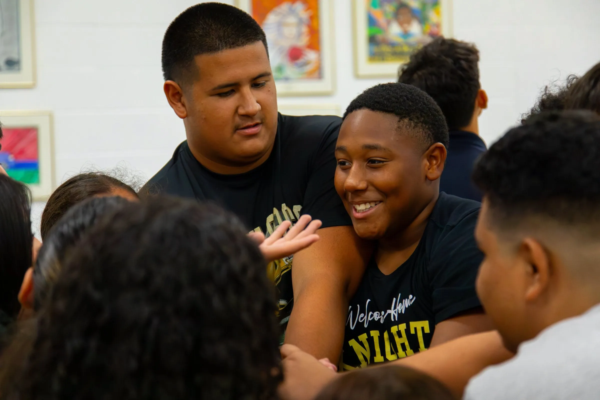

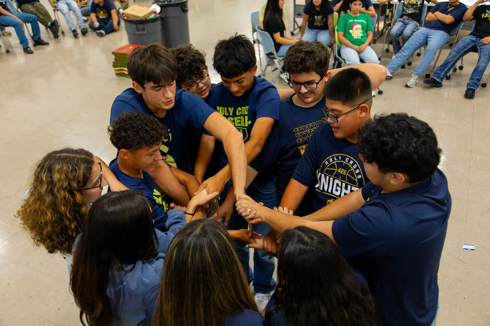
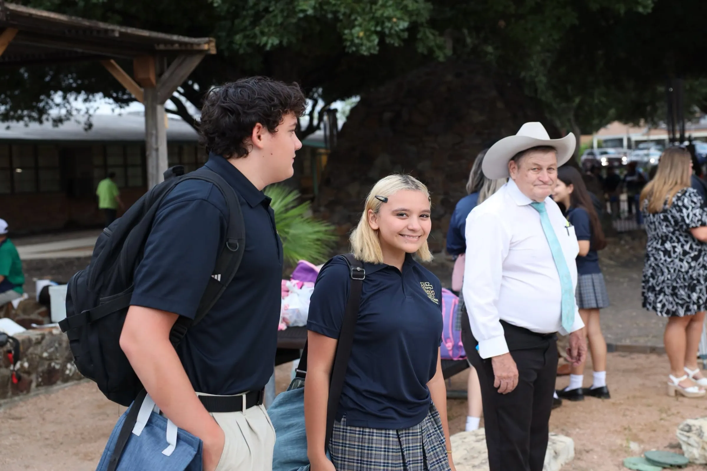
Católica · Mixta · Grados 6.º–12.º
La única escuela católica mixta de San Antonio de 6.º a 12.º grado.En el West Side desde 1957.
✎ Páginas escritas en español · BORRADORCONFIRMAR que sea la “única”
Su costo real
¿Cuánto cuesta Holy Cross de verdad?
Aquí está la colegiatura publicada y lo que queda después de la Cuenta de Libertad Educativa de Texas (TEFA). Hope for the Future y la Ayuda 426 pueden bajarla todavía más.
Vea su costo estimado con la calculadora de colegiatura →Secundaria · 6.º–8.º
$8,272
Colegiatura 2026–27 · cifra publicada, por confirmar
TEFA hasta−$10,474
Lo que podría quedar CÁLCULOPuede quedar cubierta
Preparatoria · 9.º–12.º
$13,145
Colegiatura 2026–27 · cifra publicada, por confirmar
TEFA hasta−$10,474
Lo que podría quedar CÁLCULO$2,671
26 oct.Próximo: recorridos de 8.º grado, hasta el 4 de nov. CONFIRMARReserve →In English? See the cost in English →
TEFA se solicita; no está garantizada, y los montos varían. Nuestra oficina de admisiones le ayuda a solicitarla. Un solo precio, sin recaudaciones obligatorias.
100%de la generación 2026 fue aceptado en la universidad CONFIRMAR
≈15:1estudiantes por maestro CÁLCULO300 estudiantes ÷ 19.9 maestros de tiempo completo · Depto. de Educación de EE. UU., 2023–24
$0cuota de solicitud
~4,000exalumnos, dueños de la escuela desde 2001
Nuestra historia
Dijeron escuela de oficios. Nosotros dijimos universidad.
En 1957, la Arquidiócesis planeaba una escuela de oficios para el West Side de San Antonio. Los Hermanos de Holy Cross, la misma orden que fundó Notre Dame, insistieron en una escuela que preparara para la universidad. Se inscribieron 84 estudiantes de primer año, la colegiatura era de $67.50, y desde entonces la escuela ha mandado a la universidad a los hijos de las familias del West Side.
Lea nuestra historia →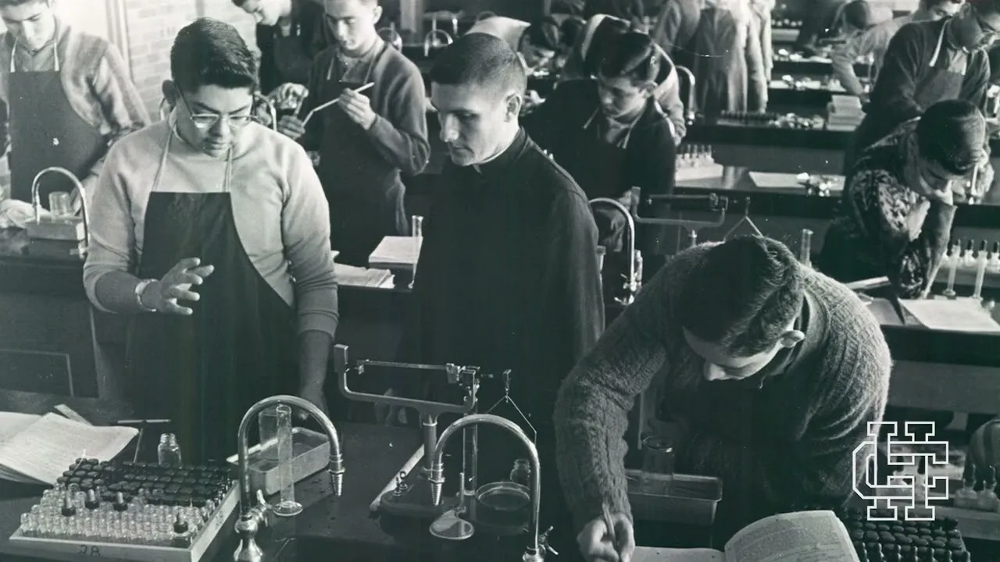
1957
Fundada en el West Side
84 estudiantes en la primera generación.
1968
Sin fondos, pero con las puertas abiertas.
Los Hermanos y la comunidad la sacaron adelante.
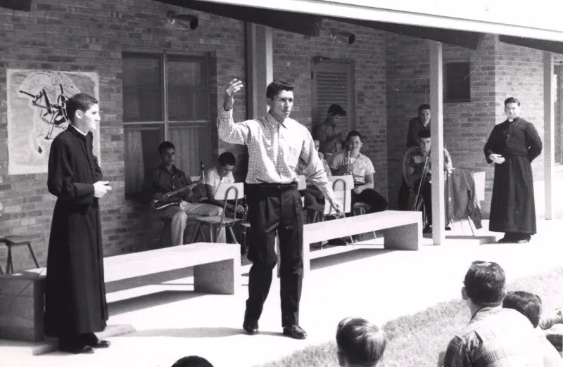
2001
Propiedad de sus exalumnos
Desde entonces vive de sus donativos.
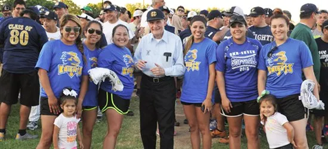
Hoy
Jueces, médicos, ingenieros, bomberos.
Y casi 4,000 exalumnos.
Grados 6.º–12.º
De sexto grado a la universidad
La única escuela católica mixta de la ciudad donde una familia puede empezar en 6.º grado y quedarse hasta la graduación. CONFIRMAR
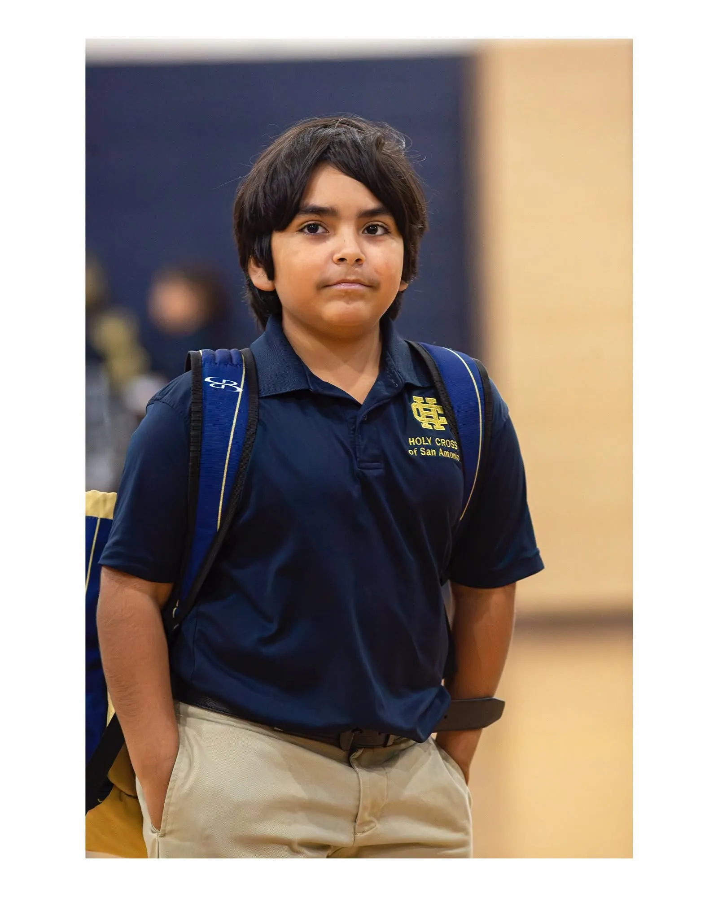
SecundariaGrados 6.º–8.ºEmpiece un año antes de la preparatoria y llegue a 9.º grado sintiéndose ya en casa.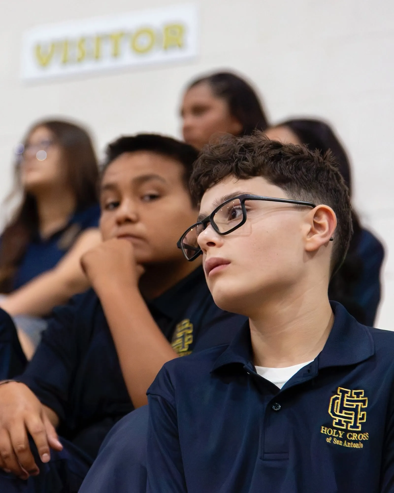
PreparatoriaGrados 9.º–12.ºPreparación para la universidad, crédito doble y cursos AP, en clases pequeñas donde a cada estudiante se le conoce. CONFIRMAR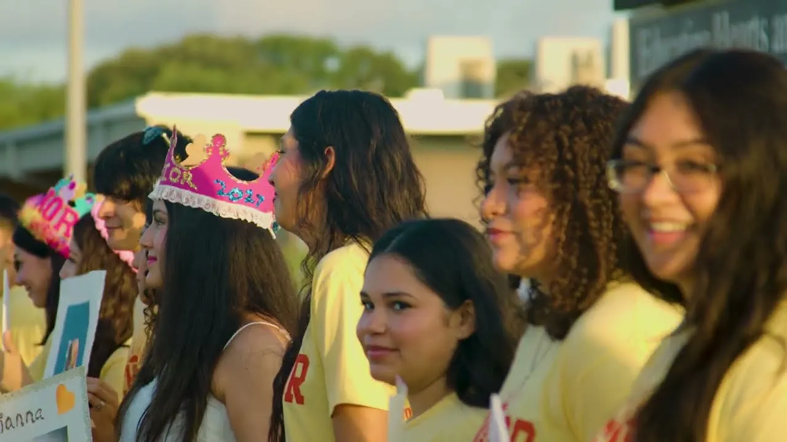
La universidad y más allá100% aceptadosOrientación desde el primer año de preparatoria hasta las cartas de aceptación. CONFIRMAR426 N. San Felipe
La vida en Holy Cross, en fotos.
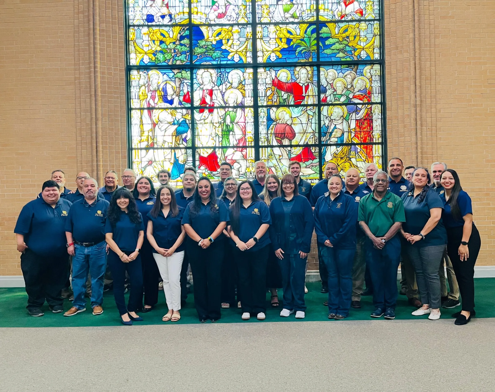
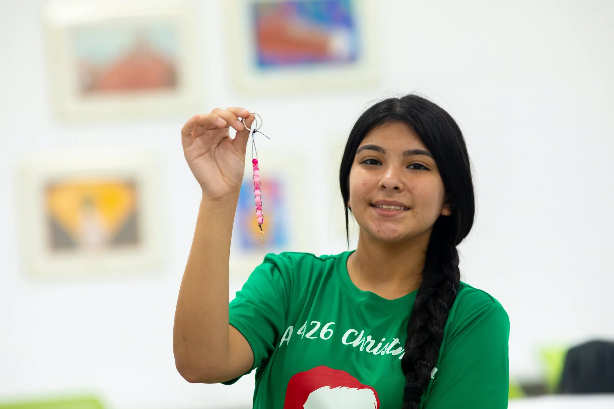

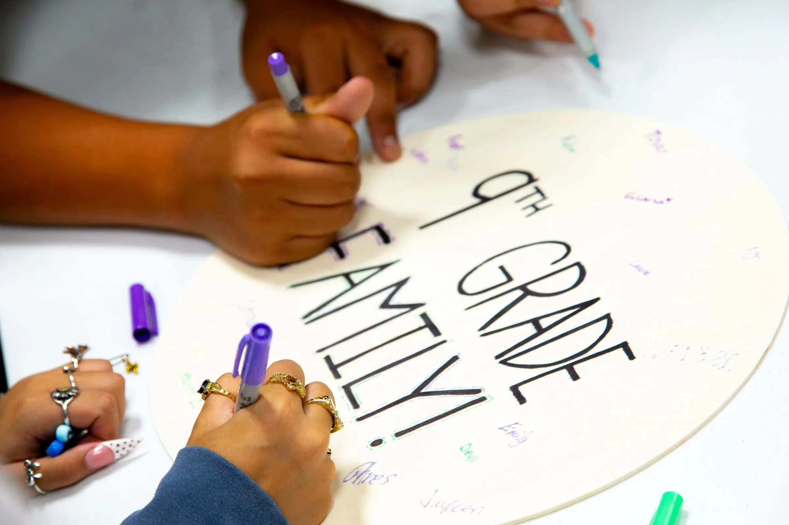

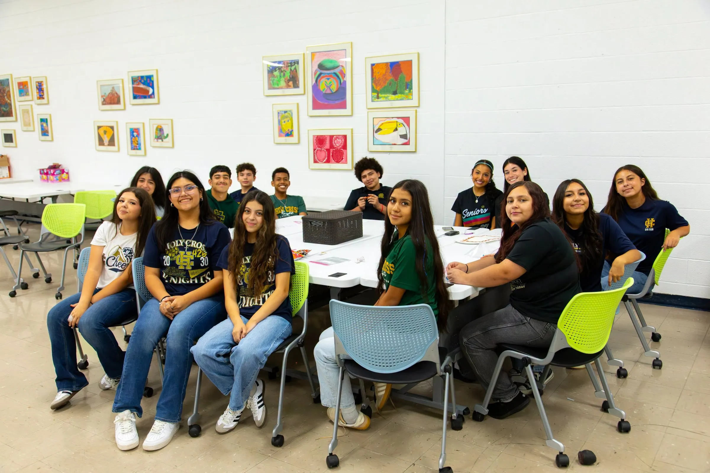
Fotos de la página de Facebook de la escuela. Los derechos de uso están por confirmar con la escuela.
Lo que dicen las familias
“Not only friends but a family to lean on.”De reseñas públicas, en inglés CONFIRMAR USOVideos del canal de YouTube de la escuela. Se ven aquí mismo, y solo cuando usted los toca. Los cinco videos de familias y los números →
Admisiones 2027–28
Recorridos, fecha límite y Día de Aceptación.
26 oct.Empiezan los recorridos de 8.º grado, hasta el 4 de nov. CONFIRMAR
1 de eneroFecha límite de Decisión Temprana CONFIRMAR
20 de eneroDía de Aceptación CONFIRMAR
Se habla español. Llame a [NOMBRE]: [TELÉFONO]